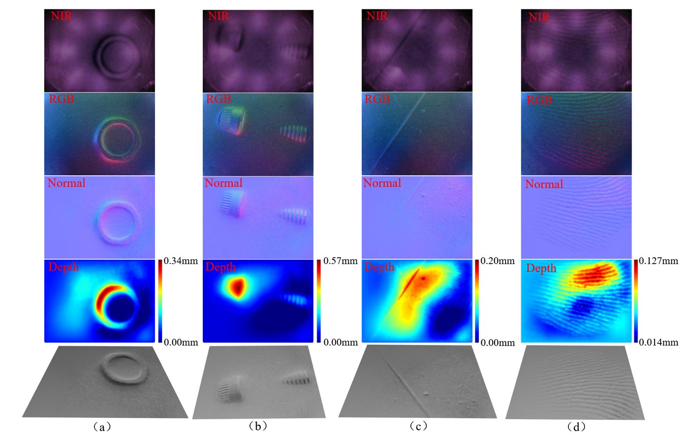
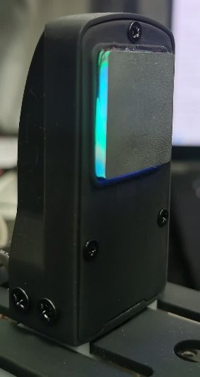
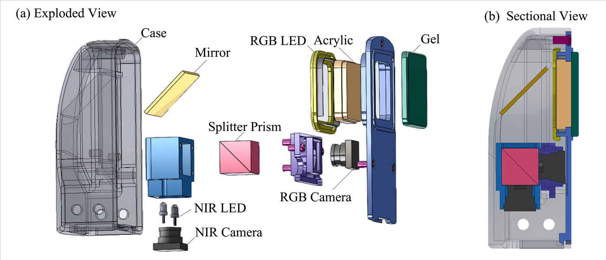

Complete gripper
2finger_gripper.STEP · 13.53 MB
A two-finger robotic end-effector built with two flat vision-tactile sensors at the fingertips, an upper camera for pre-contact visual perception, and a rack-and-pinion transmission mechanism.
Role: sensor fabrication, fingertip integration, reconstruction validation, and manipulation testing.




Open hardware
Download the editable STEP source file for manufacturing, inspection, and design modification.
2finger_gripper.STEP · 13.53 MB
Licensed under CERN-OHL-S-2.0. Contributors: Xiaofan Lu and Yuankai Lin.
State Key Laboratory of Intelligent Manufacturing Equipment and Technology (智能制造装备与技术全国重点实验室).
Read the CAD license